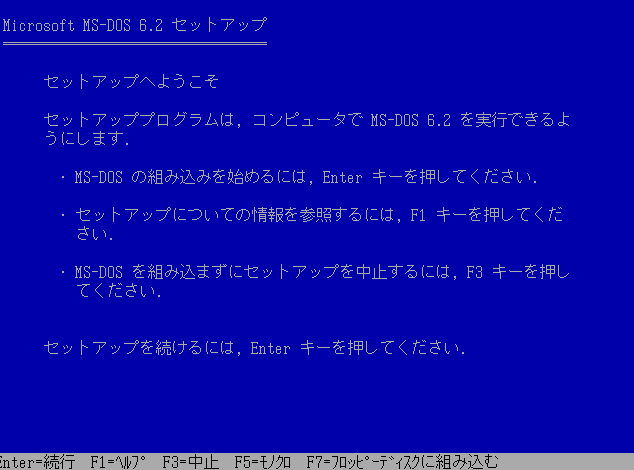
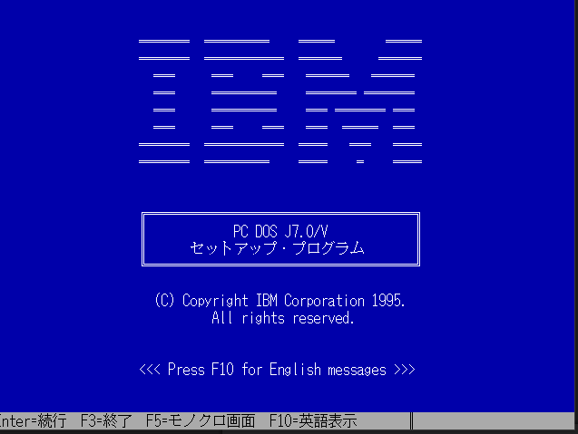
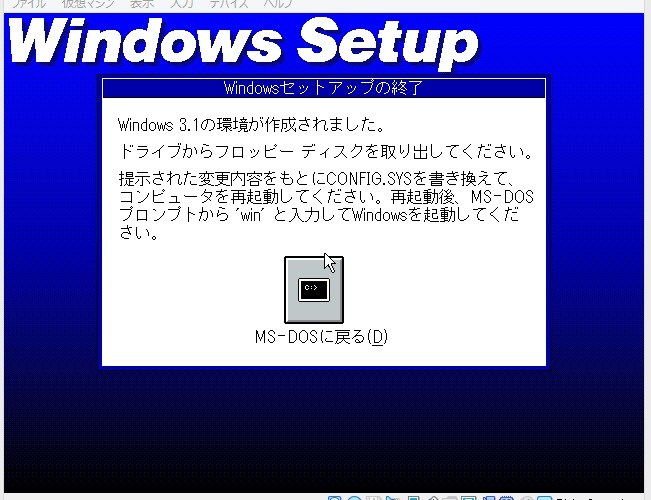

ここはMicrosoft全盛期(多分2000年代初頭?)のWindows関連のメモです
Windows 95 Tips
Windows95用ソフトウェアのリンク
VmwareでMS-DOS 6.2 or IBM PC-DOS 7.0/Jをインストールする

最初は画面の指示に従ってインストールを進めます。
MS-DOSのみインストール後にWindowsで作れるDOS起動ディスクから立ち上げ、cドライブでedit c:¥config.sysと入力し、
emm386の行のdevice~の前にremと入力します。
後は3.1のファイルをコピーして、そこからセットアップします。(PC-DOSだとWindowsインストール画面に進まない?)途中でtotixyuudeconfigやautoexecを書き換えるか聞かれるが、
configやautoexecに変更は加えす、セットアップが終わったら再起動し、windowsのディレクトリに移動し、winと入力するとWindowsが起動するのでここで完了です。

| 参考サイト |
|---|
| http://j7p.net/backup/howto_doscdrom.html | http://himagine.s20.xrea.com/win31br/win31br.htm |
| http://himagine.s20.xrea.com/win31br/win31br.htm | https://legacyos.ichmy.0t0.jp/virtualwin31/ |
| https://www.ipentec.com/document/hyper-v-install-msdos-62
|
Windows用ソフトウェア ダウンロードリンク
Visual Studio
Visual Studio 2010 Expressと旧版のダウンロード先まとめ | Wolfish BLOG
NonSoft - Visual Studio 2010 Expressのダウンロードとインストール
http://nonsoft.la.coocan.jp/Chinamini/20110001/20110308.html
Index of /meppbin/windows/vs2010/sp1
https://download.gforge.liris.cnrs.fr/meppbin/windows/vs2010/sp1/
Visual Studio 2013
https://web.archive.org/web/20140801000000*/http://www.microsoft.com/ja-jp/dev/products/community.aspx
ダウンロードの概要
https://web.archive.org/web/20150205024831/http://www.visualstudio.com/ja-jp/downloads/download-visual-studio-vs#d-community-expando
太田研究室 > Visual C++ 2010 Express インストール メモ
http://cvwww.ee.ous.ac.jp/vc10inst.html
Microsoft Web Expression
Design_Trial_ja.exe
Encoder_ja.exe
Web_Trial_ja.exe
2k対応ソフトウェア
FFFTP 1.98gとか